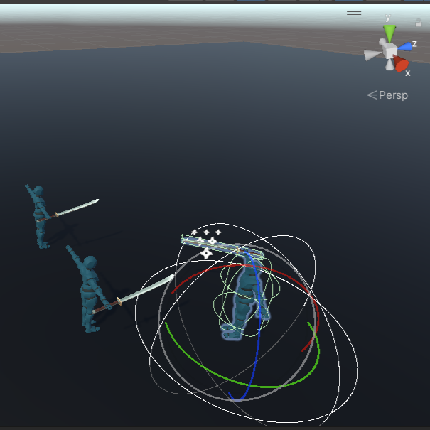
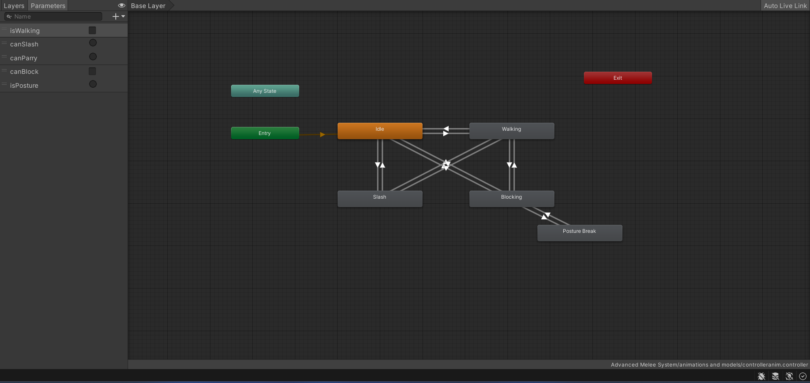
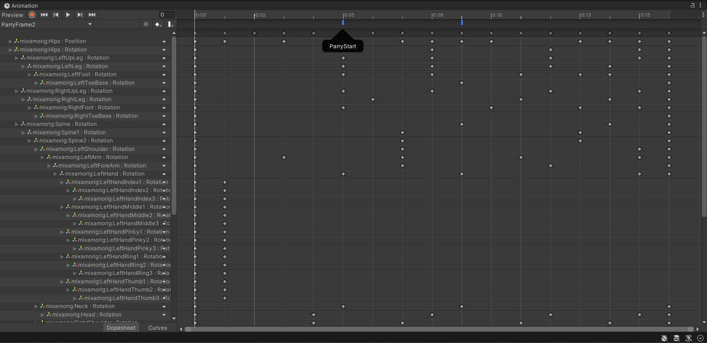

Project Starfall
Project Status:
Project Type:
Project Duration:
Software Used:
Languages Used:
Primary Role(s):
Team:
Completed
Hybrid Learning Environment
4 Weeks
Unity
C#
Game Developer
2 Devs, 1 Artist
About Project Starfall
Our Unannounced Game as a Service is a 2D Metroidvania experience for local co-op play, inspired by beloved 1980s cartoons. It operates as a constantly evolving game, offering an expanding open world, engaging storylines, and character customization. Join up to 4 players as you embark on cooperative adventures and exciting missions, uncovering the mysteries of the game's world while customizing your characters with 1980s nostalgia.
My Features
- Octodrone
- Radial Stamina
- Post-processing
Technologies Used
- Statemachine
- Shadergraph
- Animator
Intro
This summary offers a glimpse into the obstacles I faced while building this
intricate system, with a special focus on animation frames. My goal was to make the combat system
feel like real swordfights. Animation frames were at the core of this vision. They acted as the
timing for parry and block actions, like the beats in a song, making the combat feel authentic.
In the next sections, we'll explore how I conceived and designed this system, and how animation
frames played a crucial role in bringing it to life. We'll also touch on the challenges I
encountered, as every big project comes with its hurdles. Throughout, remember that the magic of
game development often lies in the balance between vision and execution, with animation frames being
a key part of that equation.
Gif of the mechanics

In the gif above you can see how the mechanic works.
Development
Parrying and blocking stood at the core of the system, each posing its unique coding challenges. It wasn't just about making them work; it was about coding them to align seamlessly with specific animation frames. Players had to grapple with these techniques. To make the combat system more engaging, I employed SphereCast within the code. This technique introduced a radius to parry and block actions, making the combat interactions dynamic and responsive.
A function from the script.

In the snippet above you can see the SphereCast being used when you press the parry button.
How the SphereCast looks in the editor

As you can see the radius of the SphereCast is around the player, so when the enemy does an
attack in that range you are able to block/parry it
Animator
The job of the animator was to bring the combat system to life, ensuring that every action, from parrying to striking, seamlessly blended with the gameplay. They were the architects of realism, making the combat experience both engaging and immersive.
How the animator looks

Collision and Animation frames
The posture damage system added a layer of complexity that was deeply tied to the world of animation frames. For posture damage to make sense, parrying and strikes had to be executed within specific frames. This was a coding challenge that required precision.
Advanced collision detection was an integral part of the combat system. It allowed players to experience precise interactions between their sword and an enemy's weapon. However, it operated within the intricate framework of animation frames, making the coding journey all the more challenging.
The animation events setup

Conclusion
In crafting the Advanced Melee Weapon Combat System, I uncovered the delicate balance between art and science within game development. It beckons players to master precise timing while challenging developers to unravel creative and coding complexities. Animation frames emerged as the pivotal enablers, shaping an immersive combat experience.